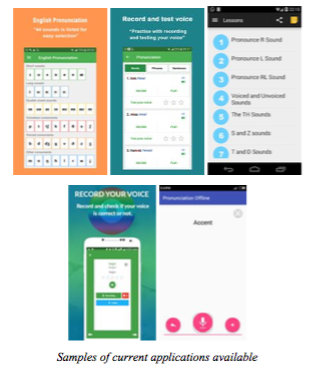
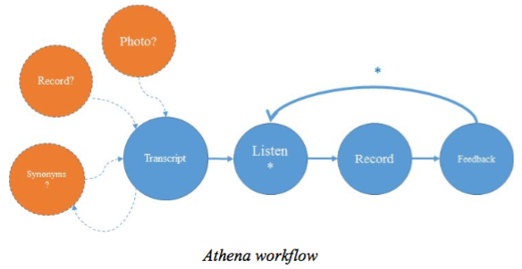

Athena
| Group 7 | ||||
|---|---|---|---|---|
| Florencia | Laura | Fangzhou Liu | Jing Sun | Mounica |
Project Description
Today, there is plenty of mobile applications and software intended to train the users in English pronunciation. However, their approach is different.
Instead of focusing on user intended content pronunciation, these applications are structured in an English course manner, where the user goes through different levels of knowledge and evolves through time. They offer an academic approach where each sound is to be practised based on fixed words that are provided. There are tools that outperform others, and those are normally paid. While the pronunciation feedback is present for free text that the user input, that is normally one of the complementary features of the app and users might not even know how to get there, or even will not even download the app because of the description and the difference in the app approach and the approach they are looking for, which we believe is a fast, straightforward feedback on their speech pronunciation.
We will provide that fast, straightforward feedback on users speech pronunciation. We envision an application that will obtain the text the user wants to pronounce, will provide the correct pronunciation, user will record and a feedback will be provided. We will get details on feedback as we perform interviews, but we imagine that the text will be presented to the user with colors indicating whether the word was pronounced correctly: from green if pronunciation is accurate to red if the word was mispronounced. For those mispronounced, the user will be able to click on them to listen the right pronunciation and practice to record again and get feedback (check our video!); so on till the user is satisfied or the word is pronounced correctly. Additionally, a percentage score will be displayed. For more details on this score, please check out the implementation section.
How the application will obtain the text is another objective of the needfinding we will perform. We believe typing and recording might be the most useful methods, but we want to get that information from users. We also believe other features such as synonym finding based on input speech might be another nice feature to have. It would help people who lack vocabulary.
Please enjoy the concept vedio!
Here is a link to our current Timeline
https://tinyurl.com/hu4jvph| Team Member | Degree | Field of Study | Project Role | Past Experience | Skill Set |
| Florencia | Masters | TEAM | Project manager, app design, video, poster | Bachelor’s in Systems Engineering; IT Project Manager for General Motors and Anheuser-Busch Inbev developing IT solutions for business users | Project Management, Photoshop, Illustrator, Video Editing, Python, C, SQL |
| Laura | Fifth Year Take 5 undergrad | CS, Psychology | App development | Prior full stack software engineering internship at Etsy | Javascript, Java, SQL, PHP, git, HTML |
| Fangzhou Liu | Masters | CS | Pronunciation comparison algorithm / app development | Bachelor’s in Telecommunications Engineering; prior iOS software engineering intern at a startup in Beijing | Java, Objective-C, Ruby, SQL, Web and Mobile development |
| Jing Sun | Masters | CS | Web development | Bachelor’s in Information and Computing Science; worked as a web developer for one year | HTML, Javascript, jQuery, Objective-C, Java, SQL |
| Mounica | Masters | TEAM | App design, video & poster, needfinding and evaluation techniques, prototype creation | Bachelor’s in Electronics and Instrumentation Engineering; worked as a systems engineer | SQL, Python, HTML, Excel, Wireframes, Poster creation |